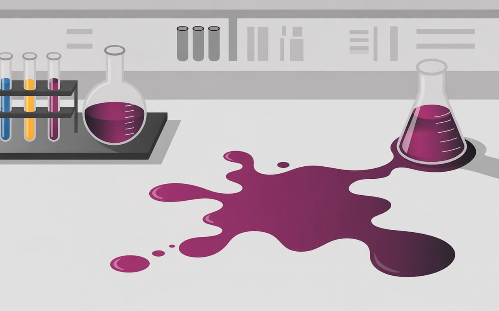

:: Now begins a story...
May I present to you, a finely curated section of a fine collection of the wonderful web we weave with a weekly roundup of bits and pieces from the far corners of the super information highway that I like to call — Token Wisdom ✨


"The most important thing in science is not so much to obtain new facts as to discover new ways of thinking about them."
— According to William Lawrence Bragg, who probably never imagined we'd be hacking ChatGPT to steal Gmail secrets while debating whether dogs have better judgment than facial recognition systems

Editor's Notes 📆
Week 39 of 52 // September 21st 🧿 28th, 2025
Welcome to the 127th edition! This week we dive deep into the unexpected—from accidental discoveries that changed the world to the unintended vulnerabilities in our most trusted AI systems. We're exploring how semiconductor disruption remains frustratingly theoretical, how supply chains have become the new battlefield, and why sometimes the most profound innovations emerge from complete accidents.
The convergence of security vulnerabilities, surveillance technologies, and serendipitous discoveries reveals a world where our greatest advances often come with unexpected consequences we're still learning to navigate.

🔮 Pearls of Wisdom, The Latest Edition...
Get smart, fast. If you're pressed for time and want to keep up to date!
Enjoy The Newest Latest, A Closer Look & Time Well Spent!

🎉 Newest / Latest
100% Authentic Humanly Chosen

Disruption Delayed, Accidents Amplified, and Surveillance Normalized
This week's collection examines the gap between promised disruption and delivered reality, celebrates the beautiful chaos of accidental discovery, and confronts the growing normalization of surveillance in everyday spaces. From supply chain vulnerabilities to seasonal disruptions, we're witnessing how unplanned events often have more impact than carefully orchestrated innovations.
- What Does Semiconductor Disruption Look Like?
While everybody agrees AI will disrupt semiconductor design and EDA tools, nobody has yet suggested what a disrupted flow would actually look like. Read more at SemiEngineering - How Common Is Accidental Invention?
One of the most important inventions of the 19th century was mauve dye, the first synthetic aniline dye—discovered completely by accident. Explore at Construction Physics (inspired this week's essay) - Arizona State to Explore Facial Recognition to Ease Stadium Congestion
Arizona State officials are turning to facial recognition technology to manage record student turnouts at sold-out football games. Learn more at Sports Business Journal - Hackers Target Supply Chains' Weak Links in Growing Threat to Companies
Number of cyber attacks on third-party suppliers doubled in 2024 as multibillion-dollar ransomware sector booms. Read at Financial Times - Security Researchers Swiped Secrets from Gmail. A ChatGPT Agent Helped
They warned similar exploits could target tools like Dropbox, GitHub, and Google Drive to steal highly sensitive business data. Discover at The Verge - Scientists Discover From Space That Earth's Seasons Are No Longer in Sync
Earth's seasons aren't as simple as we once thought—satellite technology reveals hidden seasonal cycles disrupted by climate change. Explore at Le Ravi - Earthmover Wants to Become the Snowflake of Weather and Geospatial Data
Earthmover found new customers building tools for weather model analysis and raised a $7.2 million seed round. Learn more at TechCrunch - Dogs Don't Like Certain People—And There's An Explanation
Scientific research reveals the fascinating reasons behind canine preferences and social behaviors. Read at The Valley Vanguard - DARPA Is in the Middle of a Microscopic Robotic Arms Race
DARPA recognizes that insect-scale flying robots have immense military potential in modern warfare. Discover at The National Interest - Are Five Senses Holding Us Back? Scientists Say We Could Use Seven
A mathematical model shows memory capacity is maximized when represented by seven features, with applications in AI and neuroscience. Watch at SciTechDaily
*CAUTION: Side effects might include your supply chain developing sentience, finding yourself managing a microscopic robot army, or accidentally discovering that your Gmail has been teaching ChatGPT to predict seasonal changes. You may also develop an inexplicable ability to distinguish between accidental and intentional innovations using only your enhanced seven senses.
This uncanny prediction is endorsed by the Association of Accidentally Disrupted Semiconductor Engineers Currently Hiding from Facial Recognition Systems, approved by a consortium of seven-sensed researchers riding insect-scale robots, and verified by a mysterious weather prediction algorithm that runs on stolen Gmail secrets.
👁️ A Closer Look
Unearthing gems in the digital landscape.

Because in the ever-evolving tech world, there's always more to learn and laugh about.
How Beautiful Failures Create Innovation Breakthroughs
The Mistake Engine
Why are research institutions optimized for exactly the opposite of breakthrough innovation? From Perkin's accidental purple dye to CRISPR's unexpected precision, history's biggest discoveries emerged from beautiful failures—not flawless execution. We've built elaborate systems to avoid the very accidents that create breakthroughs. What if we're doing innovation backwards?
 🌶️ iamkhayyam
🌶️ iamkhayyam
A Closer Look: Explorations in Technology
Weekly essay in the areas of blockchain, artificial intelligence, extended reality, quantum computing, and all the bits and pieces.

A Closer Look: Explorations in Technology
Weekly essay in the areas of blockchain, artificial intelligence, extended reality, quantum computing, and all the bits and pieces.


📺 Time Well Spent
Top Ten of the Time I Spend

From Euclid's Hidden Agenda to Apple's AI Awakening: Intellectual Adventures in Mathematics and Technology
This week's video collection explores fundamental questions about knowledge, technology, and human nature. We journey from ancient geometry to modern AI debates, examining how our tools and understanding evolve together in unexpected ways.
- Apple Isn't Built For The AI Era
Critical analysis of Apple's strategic positioning and architectural challenges in the age of artificial intelligence. Watch on YouTube - What Was Euclid Really Doing?
What role were ruler and compass constructions really serving in ancient mathematics? A fresh perspective on geometric foundations. View on YouTube - Denying Amish Autism While Standing Next to a Barn That Was Hand Built in Ten Hours Is Diabolical
A provocative examination of correlation, causation, and the narratives we construct around community and health. Explore on YouTube - The Breakthrough That Could Change Computing Forever
Revolutionary developments in computing technology that could reshape how we process information and solve complex problems. Learn more on YouTube - Counter-Surveillance Using Bluetooth!
Every person is now completely trackable because each person emits a radio signal—and how to fight back using their own technology. Discover on YouTube - I Built a Site That Can Get Data From Anywhere
Technical deep-dive into web scraping, data extraction, and the tools that power modern information gathering. Watch on YouTube - Hacking the Eufy Make UV Printer Into a One-Click Factory
Transform consumer hardware into industrial-grade manufacturing tools through creative engineering and reverse engineering. View on YouTube - Discover More with the Analog Discovery 3
Digilent's latest multi-function test and measurement device—a digital oscilloscope and much more for modern electronics work. Explore on YouTube - Captain Picard and His Crew Try to Work From Home
Archival footage of the U.S.S. Enterprise-D's experimental remote work protocols, complete with uniform compliance issues and signal degradation. Learn more on YouTube - I Wish I Was Taught Entropy This Way!
Entropy is not a measure of disorder—a fundamental reframing of thermodynamics that changes everything about how we understand energy. Watch on YouTube
*This remarkable skill set has been certified by the League of Geometrically-Enhanced AI Critics Currently Building Barns While Studying Entropy, verified by an ensemble of remote-working Starfleet officers using analog discovery tools, and approved by the Society for Counter-Surveillance Through Ancient Mathematics.
CAUTION: Please exercise discretion when attempting to apply 2,000-year-old geometric principles to modern AI criticism, hack consumer printers into industrial equipment, or use thermodynamic entropy to explain why your Zoom calls keep failing. The digital pioneers in Silicon Valley neither confirm nor deny these findings, being preoccupied with teaching their AIs to work from home while avoiding Bluetooth tracking.

✨Token Wisdom
Knowledge Transmuted
In this 127th edition of Token Wisdom, we've explored the fascinating tension between planned disruption and accidental discovery. Side A's "The Newest Latest" reveals how our most anticipated technological revolutions remain frustratingly theoretical, while our greatest breakthroughs continue to emerge from happy accidents and unintended consequences.
Our insights span from the semiconductor industry's struggle to define what disruption actually looks like, to the serendipitous discovery of synthetic dyes that launched entire industries. The gap between surveillance technology's promise (managing stadium crowds) and its reality (enabling unprecedented data theft) exemplifies our ongoing challenge of predicting technology's true impact.
We also confront the growing normalization of surveillance in everyday spaces and the weaponization of our most trusted tools. From facial recognition at football games to ChatGPT agents stealing Gmail secrets, we're witnessing how quickly today's convenience becomes tomorrow's vulnerability.
This week's journey shows how progress rarely follows the scripts we write for it. Supply chain attacks, seasonal disruptions, and microscopic robot armies remind us that the most significant changes often come from the margins—through accident, necessity, or the patient work of researchers studying things like weather patterns and dog behavior.
At this intersection of intentional innovation and accidental discovery, we must embrace both planning and serendipity. Our goal: to remain open to unexpected breakthroughs while building robust defenses against unintended consequences, fostering a future where we're prepared for both the disruptions we anticipate and the ones that surprise us.

🌈💫 The Less You Know
The More You Learn
Latest Technologies & Innovations:
- Facial Recognition Systems: Stadium crowd management and access control
- Supply Chain Security: Third-party vulnerability assessment and protection
- AI-Assisted Data Extraction: ChatGPT agents for information gathering
- Weather Data Analytics: Geospatial analysis and meteorological modeling
- Microscopic Robotics: Insect-scale autonomous flying systems
- Bluetooth Counter-Surveillance: Personal privacy protection techniques
- UV Printer Modification: Consumer hardware industrial applications
- Semiconductor Design Disruption: AI-enhanced EDA tool development
- Multi-Sensory Enhancement: Seven-sense cognitive optimization research
- Seasonal Monitoring Systems: Satellite-based climate change detection
Most Important Topics:
- Accidental vs. Intentional Innovation: The role of serendipity in technological progress
- Surveillance Normalization: How security measures become privacy invasions
- Supply Chain Vulnerabilities: Third-party attack vectors and mitigation strategies
- AI Security Paradox: When protective tools become attack vectors
- Semiconductor Industry Evolution: The gap between disruption theory and practice
- Climate Change Detection: Advanced monitoring of planetary systems
- Privacy vs. Convenience Trade-offs: Balancing security with personal freedom
- Microscale Military Technology: The future of autonomous warfare systems
- Enhanced Human Capabilities: Expanding beyond traditional five senses
- Weather Commercialization: Data as infrastructure for business decisions
Acronyms:
- EDA - Electronic Design Automation
- AI - Artificial Intelligence
- DARPA - Defense Advanced Research Projects Agency
- UV - Ultraviolet
- ChatGPT - Chat Generative Pre-trained Transformer
Technical Terms:
- Supply Chain Attack: Cyber attack targeting less-secure elements in supply networks
- Facial Recognition: Biometric software identifying individuals from facial features
- Semiconductor Disruption: Fundamental changes in chip design and manufacturing processes
- Geospatial Data: Information tied to specific geographic locations
- Microscopic Robotics: Robots operating at extremely small scales
- Counter-Surveillance: Techniques to avoid or detect surveillance systems
- Synthetic Aniline Dye: Artificially created chemical compounds for coloring materials
- Weather Model Analysis: Computational prediction of atmospheric conditions
- Multi-Function Test Equipment: Devices combining multiple measurement capabilities
- Bluetooth Tracking: Location monitoring using short-range wireless communication
Just because Jon Snow knows nothing, doesn’t mean you have to.
Embrace the pursuit of knowledge to shape a better tomorrow. Sign up for more Token Wisdom and carry the torch of foresight into the fathomless domains of innovation and beyond.
"While we're busy waiting for semiconductor disruption and debating whether dogs have better judgment than facial recognition systems, remember: the most revolutionary breakthroughs usually happen when we're looking the other way."
— Token Wisdom ✨
Until next time: stay smart, and kind, and definitely stay weird!
Become a Token Wisdom subscriber
Illuminate your inbox with the light of knowledge. ✨

Thank you for cruising by the Cult of Innovation
We’re making some Stone Soup here. If you enjoyed this amuse-bouche of news compilations in bite-sized morsels, please share it with your friends and help feed a community. Mmmm. #nomnom.